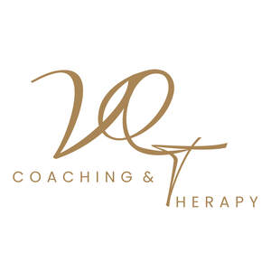
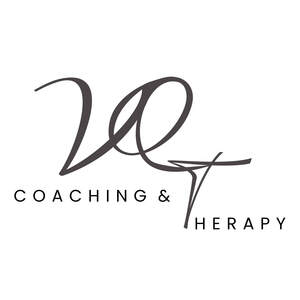

Trade Mark Journal No.2026/005 30 January 2026
UK00004311555 16 December 2025 (35,41,44,45)
Mark 1
Mark 2

Mark 3

- Class 35
- Employment counselling; Employment counselling services; Employment counselling and consultancy services; Providing employment counseling services; Counselling on business matters; Career advisory services (other than education and training advice); Career information and advisory services (other than educational and training advice); Employment consultancy services.
- Class 41
- Health education; Health and wellness training; Provision of educational health and fitness information; Education and training in the field of occupational health and safety; Education and training services in the field of occupational health and safety; Education services relating to health; Training services relating to occupational health; Education services relating to the development of childrens' mental faculties; Training services relating to health and safety; Vocational education relating to avoidance of health related problems; Provision of educational services relating to health; Career counselling and coaching; Career and vocational counselling; Career counselling relating to education and training; Vocational guidance [education or training advice]; Career advisory services (education or training advice); Vocational training services; Coaching services; Education and training consultancy; Education and training services; Education services relating to therapeutic treatments; Conducting educational support programmes for carers; Training or education services in the field of life coaching.
- Class 44
- Mental health services; Mental health screening services; Personality testing [mental health services]; Health care; Providing mental health rehabilitation facilities; Health counseling; Personality assessment services [mental health services]; Health care in the nature of health maintenance organizations; Health counselling; Public health counseling; Psychological care; Medical health assessment services; Health care relating to relaxation therapy; Health centres; Health centers; Occupational health consultancy; Health screening; Health assessment services; Consultancy relating to health care; Health consultancy; Managed health care services; Provision of health care services; Advisory services relating to health care; Professional consultancy relating to health care; Health screening services; Counselling relating to the psychological treatment of medical ailments; Consultancy services relating to health care; Counselling relating to the psychological relief of medical ailments; Provision of health care services in domestic homes; Health care services offered through a network of health care providers on a contract basis; Information relating to health; Health advice and information services; Providing health information; Psychological counselling; Counselling relating to occupational therapy; Psychological counseling; Psychological counseling of staff; Psychotherapy services; Psychotherapy; Holistic psychotherapy; Psychological assessment services; Therapy services; Psychological assessment and examination services; Psychological testing services.
- Class 45
- Bereavement counselling; Pastoral counselling; Marriage guidance counselling; Bereavement counseling; Marriage counseling; Counselling relating to spiritual direction; Divorce mediation services; Mediation services; Bereavement support; Mediation services for marital disputes.
VANQUISH SERVICES LIMITED